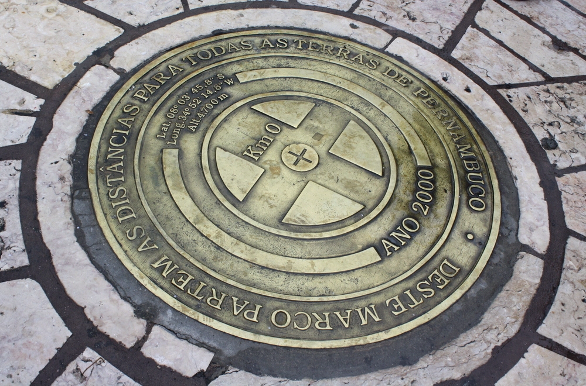

Marco Zero - Recife - PE
O Marco Zero, na Praça Rio Branco, é conhecido como local de fundação da cidade do Recife e também como ponto inicial de contagem das distâncias calculadas a partir da cidade.
 Marco zero é o nome que se dá ao local de fundação de uma cidade
Marco zero é o nome que se dá ao local de fundação de uma cidade
 Praça do Marco Zero